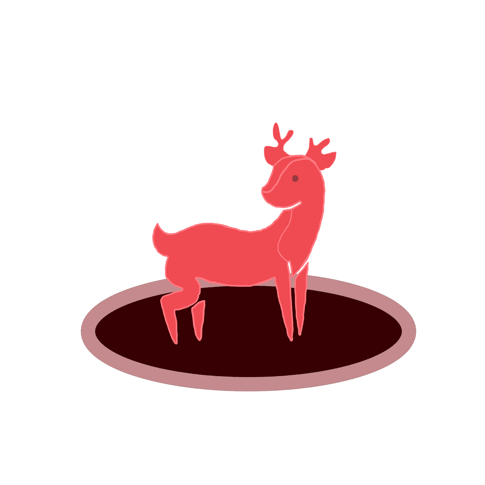

Download Redderre Today
"Redderre restores your focus and keeps you on track for greatness"
Redderre is an AI tool to help you stay on track while you work online. Redderre functions by having AI analyze your screen and
(rather obnoxiously!) warn you when you are being distracted. This tool is meant for people who want to get more done, and allows for more
freedom than most "anti-distraction" applications.
Why Redderre?
More freedom
Redderre doesn't block anything, and instead tries to steer you in the right direction. No more navigating through confusing settings to choose what websites are and aren't allowed!
Personalization & Customization
Redderre allows for heavy personalization in how Redderre agents look and act while doing their job.
Smart Distraction Detection
Redderre utilizes Artifical Intelligence and specification in order to more accurately know and react to your distractions. 10 different levels of strictness for what does and does not count as a distraction.